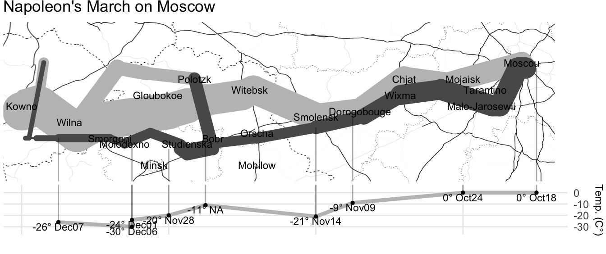
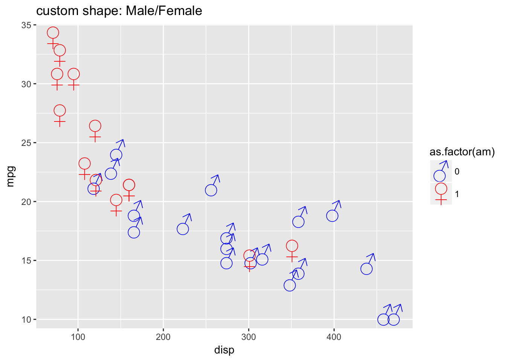
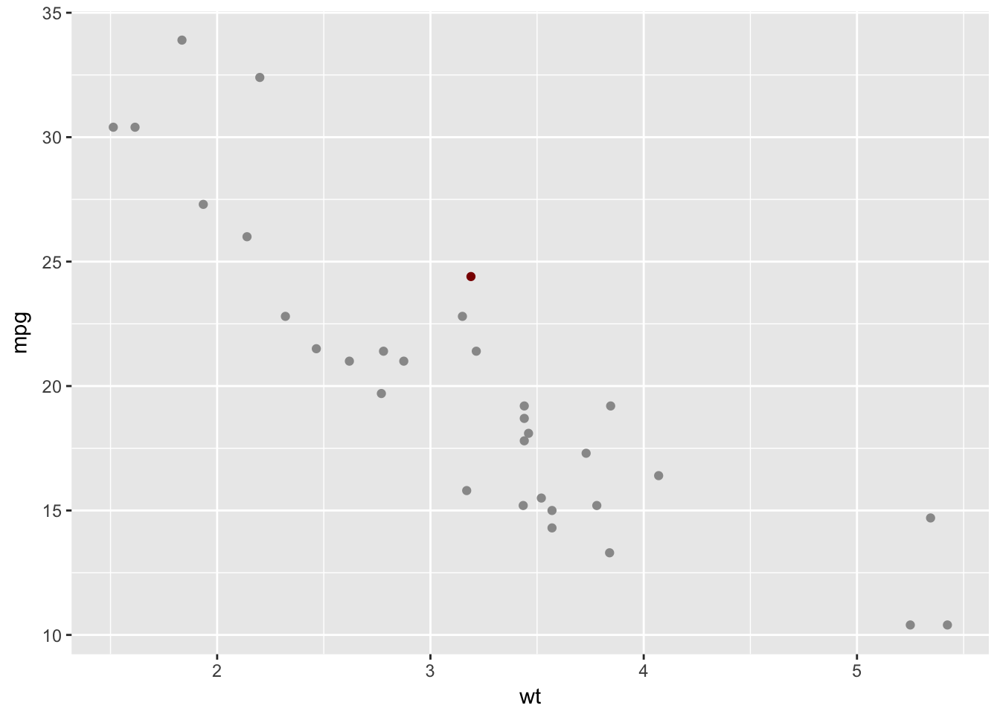
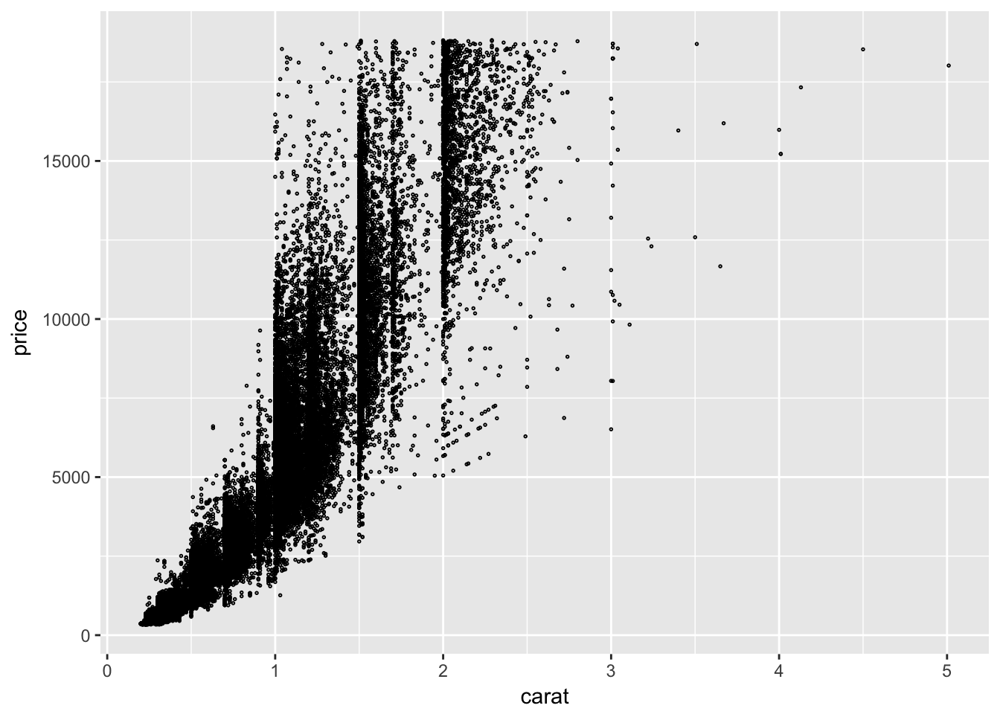
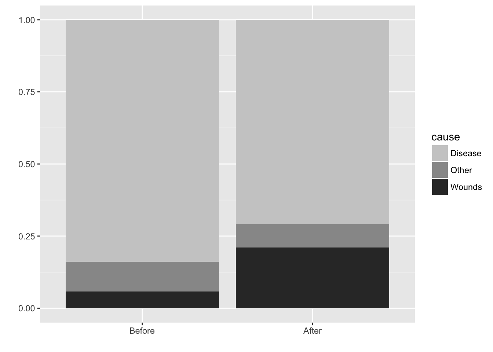
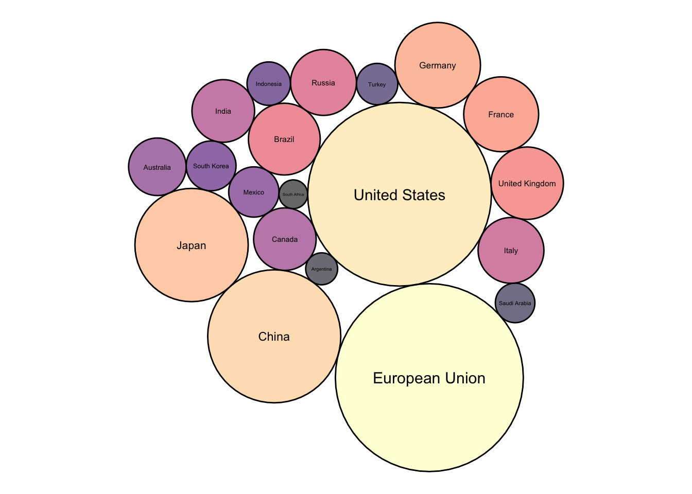

Chapter 6 Proportion–Pie charts and pareto plots
My picture
From wikipedia: “The French engineer Charles Joseph Minard was one of the first to use pie charts in 1858, in particular in maps. Minard’s map, 1858 used pie charts to represent the cattle sent from all around France for consumption in Paris (1858).” 
Other examples of Minard’s work: https://cartographia.wordpress.com/category/charles-joseph-minard/
6.1 Pie and bar chart
Good pie chart: Few elements, directly labled, alpha for pie pieces
Small multiple for pie vs stacked bar likert ratings or time trends
library(HistData)
library(tidyverse)
night.df = Nightingale %>%
gather(key = cause, value = deaths, Disease:Other) %>%
mutate(intervention = ordered( rep(c(rep('Before', 12), rep('After', 12)), 3), levels=c('Before', 'After'))) %>%
group_by(intervention, Month, cause) %>%
summarise(deaths = sum(deaths))
sum.night.df = night.df %>% group_by(cause) %>% summarise(deaths = sum(deaths))
# ## Statistic calculated internally
# ggplot(night.df, aes(cause, deaths)) +
# geom_bar(stat="summary", fun.y = "sum")
#
# ## Same plot but with seperately calculated summary
# ggplot(sum.night.df) +
# geom_bar(aes(reorder(cause, -cause.percent), cause.percent), stat = "identity")
#
# ## Horizontal bar
# ggplot(sum.night.df) +
# geom_bar(aes(reorder(cause, -cause.percent), cause.percent), stat = "identity") +
# coord_flip()
pie.plot = ggplot(sum.night.df, aes(x = factor(1), y = deaths, fill = cause)) +
geom_bar(width = 1, color="black", stat = "identity") +
coord_polar(theta="y") +
fill_palette(palette = "grey") +
labs(x = "", y = "")
stacked.plot = ggplot(sum.night.df, aes(x = factor(1), y=deaths, fill = cause))+
geom_bar(stat = "identity", position = "stack") +
fill_palette(palette = "grey") +
labs(x = "", y = "")
dodged.plot = ggplot(sum.night.df, aes(x =cause, y=deaths, fill = cause))+
geom_bar(stat = "identity", position = "dodge") +
fill_palette(palette = "grey") +
labs(x = "", y = "")
deaths.plot = ggarrange(pie.plot, stacked.plot, dodged.plot,
nrow=1, ncol = 3, align = "hv", common.legend = TRUE)
deaths.plot
6.2 Pareto plot: Whole part and and ranking
## Calculate percent and cumulative percent
sum.night.df = night.df %>% ungroup() %>%
mutate(total.deaths = sum(deaths)) %>% group_by(cause) %>%
summarise(cause.percent = 100*sum(deaths)/max(total.deaths)) %>% ungroup() %>%
arrange(-cause.percent) %>%
mutate(cum.cause.percent = cumsum(cause.percent))
## Pareto plot: Individual and cummulative proportion
ggplot(sum.night.df) +
geom_bar(aes(reorder(cause, -cause.percent), cause.percent), stat = "identity")+
geom_point(aes(reorder(cause, -cause.percent), cum.cause.percent), colour = "red", size = 3)+
geom_line(aes(reorder(cause, -cause.percent), cum.cause.percent, group = 1), colour = "red")
ggplot(data = sum.night.df) +
geom_hline(yintercept = 80) +
geom_ribbon(aes(reorder(cause, -cause.percent),
ymin = 0, ymax = cum.cause.percent, group = 1), fill = "darkgrey", alpha =.8) +
geom_bar(aes(reorder(cause, -cause.percent), cause.percent), stat = "identity", width = .8) +
geom_point(aes(reorder(cause, -cause.percent), cum.cause.percent), size = 3, colour = "red") +
theme_bw()
# ## Pareto plot
# mtcars.df = mtcars
# sum.mtcars.df = mtcars.df %>% ungroup() %>%
# mutate(total.n = n()) %>% group_by(gear) %>%
# summarise(gear.percent = 100*max(n())/max(total.n)) %>% ungroup() %>%
# arrange(-gear.percent) %>%
# mutate(cum.gear.percent = cumsum(gear.percent))
# ggplot(data = sum.mtcars.df) +
# geom_hline(yintercept = 80) +
# geom_ribbon(aes(reorder(gear, -gear.percent),
# ymin = 0, ymax = cum.gear.percent, group = 1), fill = "darkgrey", alpha =.8) +
# geom_bar(aes(reorder(gear, -gear.percent), gear.percent), stat = "identity", width = .8) +
# geom_point(aes(reorder(gear, -gear.percent), cum.gear.percent), size = 3, colour = "red")6.3 Stacked bar chart
sum.night.df = night.df %>% ungroup() %>%
mutate(total.deaths = sum(deaths)) %>% group_by(cause, intervention) %>%
summarise(cause.percent = 100*sum(deaths)/max(total.deaths),
deaths = sum(deaths))
## Stacked bar with count: Shows data directly
ggplot(sum.night.df, aes(intervention, deaths, fill = cause)) +
geom_bar(position = "stack", stat = "identity") +
fill_palette(palette = "grey") +
labs(x = "", y = "")
## Stacked bar with proportion: Abstracts to proportion
ggplot(sum.night.df, aes(intervention, cause.percent, fill = cause))+
geom_bar(position = "fill", stat = "identity") +
fill_palette(palette = "grey") +
labs(x = "", y = "")ggplot(sum.night.df, aes(intervention, cause.percent, fill = cause))+
geom_bar(position = "dodge", stat = "identity") +
fill_palette(palette = "grey") +
labs(x = "", y = "")+theme_bw()
6.4 Faceted Bar chart with overall reference distribution
The grey bars in the background represent the overall distribution and provide a referende for each of the marginal distributions.
diamonds.df = diamonds
count.diamonds.df = diamonds.df %>% group_by(cut, color) %>% summarise(count = n()) %>%
ungroup() %>% group_by(color) %>% mutate(color.count = sum(count))
ggplot(count.diamonds.df, aes(color, count)) +
geom_bar(aes(color, color.count), stat = "identity", alpha =.33) +
geom_bar(stat = "identity", alpha = .8) +
facet_grid(cut~.)
6.5 Rose or Coxcomb plots
Nightingale produced a graph “Diagram of the Causes of Mortality in the Army in the East” that showed that most soldiers during the Crimean war died of disease rather than wounds. Improving hygiene in March of 1855 led to fewer disease related deaths.
This “Diagram of the causes of mortality in the army in the East” was published in Notes on Matters Affecting the Health, Efficiency, and Hospital Administration of the British Army and sent to Queen Victoria in 1858. 
Coxcombe plot diminishes small values and requires square root transform
ggplot(night.df, aes(x = Month, y = deaths, fill = cause)) +
geom_bar(width = 1, position = "identity", color="black", stat = "identity") +
scale_y_log10() +
coord_polar(start=3*pi/2) +
facet_grid(.~intervention) +
fill_palette(palette = "grey") +
labs(x = "", y = "") +
theme_bw()## Warning: Transformation introduced infinite values in
## continuous y-axisggplot(night.df, aes(Month, deaths, fill = cause)) +
geom_bar(stat = "identity") +
facet_grid(intervention~.) +
fill_palette(palette = "grey") +
labs(x = "", y = "")+
theme_bw()
6.6 Stacked, dodged and opposed bar chart
Comparison of many categories
Stacked makes grouping easy
Dodge makes comparison easy with common axis and relative judgment
Opposing makes gender more apparent

6.7 Treemaps for whole-part of hierarchy
Schneiderman
library(treemapify)
ggplot(G20, ggplot2::aes(area = gdp_mil_usd, fill = hdi, label = country, subgroup = region)) +
treemapify::geom_treemap() +
geom_treemap_subgroup_border() +
geom_treemap_subgroup_text(place = "centre", grow = T, alpha = 0.5, colour =
"black", fontface = "italic", min.size = 0) +
geom_treemap_text(colour = "white", place = "topleft", reflow = T)
6.8 Circle packing
The most valuable graphical dimensions of x and y position are wasted in this plot becaue they have no meaning, but it can be engaging
library(packcircles)
library(viridis)
library(tidyverse)
# Show with radius vs area
packing <- circleProgressiveLayout(G20$gdp_mil_usd, sizetype='area')
G20.df = cbind(G20, packing)
layout = G20.df %>%
dplyr::select(country, x, y, radius)
dat.pack <- circleLayoutVertices(layout, npoints=60, idcol = 1, xysizecols=2:4, sizetype = "radius")
dat.pack = left_join(dat.pack, G20.df, by = c("id" = "country"))
ggplot() +
geom_polygon(data = dat.pack, aes(x.x, y.x, group = id, fill=as.factor(gdp_mil_usd)), colour = "black", alpha = 0.6) +
geom_text(data = G20.df, aes(x, y, size=gdp_mil_usd, label = country)) +
scale_fill_manual(values = magma(nrow(G20.df))) +
scale_size_continuous(range = c(1, 4)) +
theme_void() +
theme(legend.position="none") +
coord_equal()